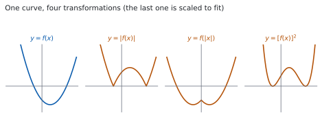
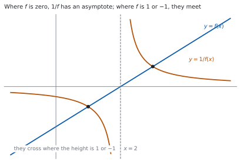

HL 2.16 — Further graph transformations and the modulus function（絶対値・逆数などのグラフと、絶対値の方程式・不等式）
- \(y = \lvert f(x) \rvert\) と \(y = f(\lvert x \rvert)\) のちがいを、グラフで説明できる。
- \(y = \dfrac{1}{f(x)}\) のグラフの、漸近線と交点の場所を言える。
- \(y = f(ax+b)\) が、もとのグラフをどう動かした形かを言える。
- \(y = [f(x)]^{2}\) の零点と、そこでの形を言える。
- 絶対値を含む方程式を解ける。
- 絶対値を含む不等式を解ける。
The idea
1. \(y = \lvert f(x) \rvert\): reflecting what is below the axis（下を折り返す）

シラバスは、扱う \(5\) つの形を並べています。
The graphs of the functions, \(y = \lvert f(x) \rvert\) and \(y = f(\lvert x \rvert)\), \(y = \dfrac{1}{f(x)}\), \(y = f(ax+b)\), \(y = [f(x)]^{2}\).
絶対値は「符号を外した大きさ」なので
\[ \lvert f(x) \rvert = \begin{cases} f(x) & (f(x) \geq 0) \\ -f(x) & (f(x) < 0) \end{cases} \tag{1}\]
です。\(f(x)\) が負のところだけ、符号が変わります。
グラフで言うと、\(x\) 軸より下にある部分を、\(x\) 軸について折り返すことです。図 1 の \(2\) 枚目がその形です。
零点は変わりません。 \(f(a) = 0\) なら \(\lvert f(a) \rvert = 0\) だからです。折り返しの境目が、ちょうど零点になります。
\(x\) 軸をまたぐ零点では、折り返しによって角（かど） ができます。
もとのグラフが \(x\) 軸に接しているだけなら、折り返しても形が変わらないので、角はできません。
2. \(y = f(\lvert x \rvert)\): copying the right half to the left（右半分を左に写す）
こちらは入力に絶対値が付いています。\(x\) が負でも \(\lvert x \rvert\) は正なので、
\[ f(\lvert x \rvert) = f(x) \ (x \geq 0), \qquad f(\lvert x \rvert) = f(-x) \ (x < 0) \tag{2}\]
です。\(x \geq 0\) の部分はそのままで、\(x < 0\) の部分は、右半分を \(y\) 軸について折り返したものに置きかわります。
図 1 の \(3\) 枚目です。もとのグラフの左半分は、使いません。
\[ y = f(\lvert x \rvert) \ \text{は、いつも even な関数} \tag{3}\]
\(y\) 軸について線対称になります（HL 2.14）。
\(f\) の零点が \(x = -1\) と \(x = 3\) だとします。\(y = f(\lvert x \rvert)\) が使うのは \(x \geq 0\) の部分だけなので、零点は \(x = 3\) とその鏡の \(x = -3\) です。
\(x = -1\) は使われません。 ここを取りちがえる人が多いところです。
3. \(y = \dfrac{1}{f(x)}\): the reciprocal graph（逆数のグラフ）

逆数を取ると、次のことが起こります。
| \(f(x)\) が | \(\dfrac{1}{f(x)}\) は |
|---|---|
| \(0\) | 定義されない → 垂直漸近線 |
| \(1\) または \(-1\) | 同じ値 → \(2\) つのグラフが交わる |
| とても大きい | \(0\) に近い |
| \(0\) に近い（\(0\) でない） | とても大きい |
| 正 | 正（符号は変わりません） |
\(f\) の最大値は \(\dfrac{1}{f}\) の最小値になります（同じ符号の範囲で）。大小が入れかわるからです。
図 2 が、\(f(x) = x-2\) の場合です。\(x = 2\) が垂直漸近線で、\(f = 1\) と \(f = -1\) になる \(x = 3\)、\(x = 1\) で \(2\) つのグラフが交わっています。
4. \(y = f(ax+b)\): horizontal transformations（横の変換）
\(f(ax+b)\) は、中身が \(0\) になる \(x\) で考えるのがいちばん速いです。
もとのグラフが \(x = p\) で \(x\) 軸と交わるなら、\(y = f(ax+b)\) は
\[ ax + b = p \ \Rightarrow \ x = \frac{p-b}{a} \tag{4}\]
で交わります。中身がもとの \(x\) の役をします。
変換としては、\(f(ax+b) = f\bigl(a\left(x+\frac{b}{a}\right)\bigr)\) と書けるので
- 横に \(\dfrac{1}{a}\) 倍（\(a > 1\) なら縮む）
- 横に \(-\dfrac{b}{a}\) だけ平行移動
5. \(y = [f(x)]^{2}\): squaring the function（\(2\) 乗のグラフ）
\(2\) 乗はいつも \(0\) 以上なので、グラフは \(x\) 軸より下に行きません。
- 零点は変わりません。 \(f(a) = 0\) なら \([f(a)]^{2} = 0\) です。
- ただし、そこでの形が変わります。 もとがまたいでいても、\(2\) 乗すると接する形になります（HL 2.12）。因数が \(2\) 倍になるからです。
- \(\lvert f(x) \rvert < 1\) のところでは値が小さくなり、\(\lvert f(x) \rvert > 1\) のところでは大きくなります。
図 1 の \(4\) 枚目が、その形です（縦の幅を合わせるために縮めてあります）。
\(\lvert f(x) \rvert\) と \([f(x)]^{2}\) は、どちらも「下に行かない」形ですが、別のものです。 前者は角ができ、後者はなめらかに接します。
6. Modulus equations（絶対値を含む方程式）
シラバスは、もう \(1\) 行足しています。
Solution of modulus equations and inequalities.
\(\lvert A \rvert = k\)（\(k > 0\)）の形は、\(2\) 通りに分かれます。
\[ \lvert A \rvert = k \iff A = k \ \text{または} \ A = -k \tag{5}\]
\(\lvert 2x-3 \rvert = 5\) なら
\[ 2x-3 = 5 \ \Rightarrow \ x = 4, \qquad 2x-3 = -5 \ \Rightarrow \ x = -1 \]
です。両辺に絶対値があるときも、同じ形です。
\[ \lvert A \rvert = \lvert B \rvert \iff A = B \ \text{または} \ A = -B \tag{6}\]
\(\lvert 2x-3 \rvert = -5\) には解がありません。絶対値は \(0\) 以上だからです。
\(k = 0\) なら、\(A = 0\) の \(1\) つだけです。\(3\) つの場合に分かれることを覚えておいてください。
7. Modulus inequalities（絶対値を含む不等式）
不等号の向きで、形が変わります。
\[ \lvert A \rvert < k \iff -k < A < k \tag{7}\]
\[ \lvert A \rvert > k \iff A > k \ \text{または} \ A < -k \tag{8}\]
\(<\) なら「あいだ」、\(>\) なら「外側」です。 \(2\) 次不等式と同じ形です（HL 2.15）。
\(\lvert x-2 \rvert < 3\) なら
\[ -3 < x-2 < 3 \ \Rightarrow \ -1 < x < 5 \]
です。\(\lvert x-2 \rvert\) は「\(x\) と \(2\) の距離」なので、\(2\) から \(3\) 以内と読むこともできます。
\(\lvert A \rvert > k\) の \(2\) 番目は \(A < -k\) です。\(A > -k\) ではありません。
\(\lvert 2x+1 \rvert \geq 5\) なら \(2x+1 \geq 5\) または \(2x+1 \leq -5\) で、\(x \geq 2\) または \(x \leq -3\) です。「または」でつなぎます。
Guidance にも、次のように書かれています。
Dynamic graphing packages could be used to investigate these transformations.
TI-Nspire CX II では、絶対値を abs( で入力できます。y1 = f(x) と y2 = abs(f(x)) の \(2\) つを同時に表示すると、折り返しの様子が見えます。
不等式も、\(2\) つのグラフを入れて交点を読むやり方で解けます。シラバスは、電卓が要る例を挙げています。
Example: \(\lvert 3x\arccos(x) \rvert > 1\)
\(\arccos\) は Topic 3 で扱う関数です。この形は手では解けません。 電卓でグラフをかいて、交点から範囲を読みます。
Paper 1 では使えません。 このページの例題と演習は、すべて手で解けるようにしてあります。
Why it works
なぜ \(\lvert f(x) \rvert\) が折り返しになるのか
点 \(\bigl(x,\ f(x)\bigr)\) が \(x\) 軸より下にあるとは、\(f(x) < 0\) ということです。このとき 式 1 から \(\lvert f(x) \rvert = -f(x)\) で、点は \(\bigl(x,\ -f(x)\bigr)\) に移ります。
\(x\) はそのまま、\(y\) の符号だけが変わるので、\(x\) 軸について折り返したことになります。
\(f(x) \geq 0\) のところでは \(\lvert f(x) \rvert = f(x)\) なので、何も動きません。 下だけが動く理由です。
なぜ \(f(\lvert x \rvert)\) が even になるのか
\(g(x) = f(\lvert x \rvert)\) と置きます。\(\lvert -x \rvert = \lvert x \rvert\) なので
\[ g(-x) = f\bigl(\lvert -x \rvert\bigr) = f\bigl(\lvert x \rvert\bigr) = g(x) \]
です。これは even の定義そのものです（HL 2.14）。
\(x \geq 0\) では \(\lvert x \rvert = x\) なので \(g(x) = f(x)\)、つまり右半分はもとのままです。左半分は、右半分の鏡です。
なぜ、逆数で大小が入れかわるのか
\(0 < a < b\) とします。両辺を \(ab > 0\) で割ると
\[ \frac{a}{ab} < \frac{b}{ab} \ \Rightarrow \ \frac{1}{b} < \frac{1}{a} \]
です。大きいほうの逆数が小さくなりました。 正の数どうしなら、向きが逆になります。
ですから、\(f > 0\) の区間で \(f\) が最大になる点は、\(\dfrac{1}{f}\) が最小になる点です。符号は変わりません（正の逆数は正、負の逆数は負）。
\(f(x) \to 0\) のとき \(\dfrac{1}{f(x)}\) はいくらでも大きくなるので、\(f\) の零点が \(\dfrac{1}{f}\) の垂直漸近線になります（HL 2.13）。
なぜ \(\lvert A \rvert = k\) が \(2\) 通りなのか
\(\lvert A \rvert\) は \(A\) か \(-A\) のどちらかで、どちらも \(0\) 以上のほうです。ですから \(\lvert A \rvert = k\) は
\[ A = k \quad \text{または} \quad -A = k \]
つまり \(A = k\) または \(A = -k\) です。\(k > 0\) なら、この \(2\) つはちがう値なので、解も \(2\) 組出ます。
\(\lvert A \rvert < k\) のほうは、\(A\) が \(0\) から距離 \(k\) 未満という意味なので、\(-k < A < k\) です。\(\lvert A \rvert > k\) なら距離が \(k\) より大きいので、\(0\) から見て両側の外になります。
\(2\) 乗してよいのは、両辺が \(0\) 以上のときです
\(\lvert A \rvert = \lvert B \rvert\) の両辺を \(2\) 乗して \(A^{2} = B^{2}\) とするのは、正しい変形です。両辺とも \(0\) 以上だからです。
\(\lvert A \rvert < \lvert B \rvert\) も、両辺が \(0\) 以上なので \(A^{2} < B^{2}\) と同値です。この形なら、絶対値を外して \(2\) 次不等式にできます（演習 9）。
片側に絶対値がないときは、気をつけてください。 \(\lvert A \rvert < B\) で \(B\) が負かもしれないなら、\(2\) 乗はできません。
Worked examples
問題文は英語です。意味が理解できなかったら、問題文の下の「日本語訳」を開いてください。解説は日本語です。
例題も演習も、すべて電卓なしで解けます。 Paper 1 のつもりで解いてください。
例題 1 Let \(f(x) = x^{2}-2x-3\).
(a) Find the zeros of \(f\).
(b) State the zeros of \(y = f(\lvert x \rvert)\), and explain your answer.
日本語訳
\(f(x) = x^{2}-2x-3\) とします。
(a) \(f\) の零点を求めなさい。
(b) \(y = f(\lvert x \rvert)\) の零点を書き、その理由を説明しなさい。
(a) 因数分解します。
\[ x^{2}-2x-3 = (x-3)(x+1) \]
零点は \(x = -1\) と \(x = 3\) です。
(b) \(y = f(\lvert x \rvert)\) が使うのは、\(f\) の \(x \geq 0\) の部分だけです（第 2 節）。その範囲にある零点は \(x = 3\) だけで、\(x = -1\) は使われません。
左半分は右半分の鏡なので、\(x = -3\) にも零点ができます。
\[ x = -3, \qquad x = 3 \]
試験ではこう書く
The zeros of \(f\) are \(x = -1\) and \(x = 3\). For \(x \geq 0\) we have \(\lvert x \rvert = x\), so \(f(\lvert x \rvert) = f(x)\) and the only zero with \(x \geq 0\) is \(x = 3\). For \(x < 0\) we have \(\lvert x \rvert = -x > 0\), so \(f(\lvert x \rvert) = f(-x)\), which is zero when \(-x = 3\), that is when \(x = -3\); the value \(-x = -1\) cannot occur because \(-x\) is positive here. Hence the zeros of \(y = f(\lvert x \rvert)\) are \(x = -3\) and \(x = 3\). The zero of \(f\) at \(x = -1\) does not appear, because the graph of \(y = f(\lvert x \rvert)\) never uses the values of \(f\) at negative inputs.
（\(x \geq 0\) では \(f(\lvert x \rvert) = f(x)\) なので零点は \(3\) だけ。\(x < 0\) では \(f(-x)\) になり、\(-x = 3\)、つまり \(x = -3\) で \(0\) になる、という意味です。）
検算。 \(x = -3\) を入れます。 \(f(\lvert -3 \rvert) = f(3) = 9-6-3 = 0\) ✓
検算（\(x = -1\) で）。 \(f(\lvert -1 \rvert) = f(1) = 1-2-3 = -4 \neq 0\) ✓ もとの零点 \(-1\) は、確かに消えています。
(a) \(x^{2}-2x-3 = (x-3)(x+1)\), so the zeros are \(x = -1\) and \(x = 3\).
(b) For \(x \geq 0\), \(f(\lvert x \rvert) = f(x)\), so the only zero with \(x \geq 0\) is \(x = 3\). The graph of \(y = f(\lvert x \rvert)\) is symmetric in the \(y\)-axis, so there is also a zero at \(x = -3\).
The zeros are \(x = -3\) and \(x = 3\). The zero of \(f\) at \(x = -1\) is not used, because \(\lvert x \rvert\) is never negative.
例題 2 The graph of \(y = f(x)\) meets the \(x\)-axis at \(x = -1\) and at \(x = 3\).
(a) State the values of \(x\) for which the graph of \(y = f(2x+1)\) meets the \(x\)-axis.
(b) State the values of \(x\) for which the graph of \(y = [f(x)]^{2}\) meets the \(x\)-axis, and describe the graph at those points.
日本語訳
\(y = f(x)\) のグラフは \(x = -1\) と \(x = 3\) で \(x\) 軸と交わります。
(a) \(y = f(2x+1)\) のグラフが \(x\) 軸と交わる \(x\) の値を書きなさい。
(b) \(y = [f(x)]^{2}\) のグラフが \(x\) 軸と交わる \(x\) の値を書き、そこでのグラフの様子を述べなさい。
(a) 中身が、もとの \(x\) の役をします（第 4 節）。\(f(\square) = 0\) になるのは \(\square = -1\) か \(\square = 3\) のときです。
\[ 2x+1 = -1 \ \Rightarrow \ x = -1, \qquad 2x+1 = 3 \ \Rightarrow \ x = 1 \]
\(x = -1\) と \(x = 1\) です。
(b) \([f(x)]^{2} = 0\) になるのは \(f(x) = 0\) のときだけなので、零点は変わりません。
\[ x = -1, \qquad x = 3 \]
ただし形は変わります。\(2\) 乗なので値は \(0\) 以上で、どちらの点でも \(x\) 軸に接して戻ります（第 5 節）。またぎません。
検算。 (a) の答えを中身に入れ直します。 \(x = -1\) なら \(2(-1)+1 = -1\) ✓ \(x = 1\) なら \(2(1)+1 = 3\) ✓
検算（(b) の符号で）。 \([f(x)]^{2}\) は \(2\) 乗なので、どの \(x\) でも \(0\) 以上です ✓ 負にならないので、\(x\) 軸をまたげません。
(a) \(f(2x+1) = 0\) when \(2x+1 = -1\) or \(2x+1 = 3\), that is when \(x = -1\) or \(x = 1\).
(b) \([f(x)]^{2} = 0\) exactly when \(f(x) = 0\), so the graph meets the \(x\)-axis at \(x = -1\) and \(x = 3\).
Since \([f(x)]^{2} \geq 0\) for all \(x\), the graph touches the \(x\)-axis at each of these points and turns back; it does not cross.
例題 3 Solve the following equations.
(a) \(\lvert 2x-3 \rvert = 5\)
(b) \(\lvert x-1 \rvert = \lvert 2x+3 \rvert\)
日本語訳
次の方程式を解きなさい。
(a) 式 5 のとおり、\(2\) 通りに分けます。
\[ 2x-3 = 5 \ \Rightarrow \ x = 4 \]
\[ 2x-3 = -5 \ \Rightarrow \ 2x = -2 \ \Rightarrow \ x = -1 \]
\(x = 4\) と \(x = -1\) です。
(b) 両辺に絶対値があるので、式 6 を使います。
\[ x-1 = 2x+3 \ \Rightarrow \ -x = 4 \ \Rightarrow \ x = -4 \]
\[ x-1 = -(2x+3) \ \Rightarrow \ x-1 = -2x-3 \ \Rightarrow \ 3x = -2 \ \Rightarrow \ x = -\frac{2}{3} \]
\(x = -4\) と \(x = -\dfrac{2}{3}\) です。
検算。 (a) を入れます。 \(x = 4\) なら \(\lvert 5 \rvert = 5\) ✓ \(x = -1\) なら \(\lvert -5 \rvert = 5\) ✓
検算（(b) を入れます）。 \(x = -4\) なら左辺 \(\lvert -5 \rvert = 5\)、右辺 \(\lvert -5 \rvert = 5\) ✓ \(x = -\dfrac{2}{3}\) なら左辺 \(\left\lvert -\dfrac{5}{3} \right\rvert = \dfrac{5}{3}\)、右辺 \(\left\lvert \dfrac{5}{3} \right\rvert = \dfrac{5}{3}\) ✓
(a) \(2x-3 = 5 \ \Rightarrow \ x = 4\); \(\ 2x-3 = -5 \ \Rightarrow \ x = -1\).
The solutions are \(x = 4\) and \(x = -1\).
(b) \(x-1 = 2x+3 \ \Rightarrow \ x = -4\); \(\ x-1 = -(2x+3) \ \Rightarrow \ 3x = -2 \ \Rightarrow \ x = -\dfrac{2}{3}\).
The solutions are \(x = -4\) and \(x = -\dfrac{2}{3}\).
例題 4 Solve the following inequalities.
(a) \(\lvert 3x-1 \rvert < 5\)
(b) \(\lvert x+2 \rvert \geq 4\)
日本語訳
次の不等式を解きなさい。
(a) \(<\) なので「あいだ」です（式 7）。
\[ -5 < 3x-1 < 5 \]
すべての辺に同じことをします。 \(1\) を足して
\[ -4 < 3x < 6 \]
\(3\) で割ります。\(3 > 0\) なので、向きは変わりません。
\[ -\frac{4}{3} < x < 2 \]
(b) \(\geq\) なので「外側」です（式 8）。
\[ x+2 \geq 4 \ \Rightarrow \ x \geq 2 \]
\[ x+2 \leq -4 \ \Rightarrow \ x \leq -6 \]
\(x \geq 2\) または \(x \leq -6\) です。
検算。 (a) の中を試します。 \(x = 0\) なら \(\lvert -1 \rvert = 1 < 5\) ✓ \(x = 2\) なら \(\lvert 5 \rvert = 5\) で、\(<\) は成り立ちません ✓ 端は入りません。
検算（(b) を試します）。 \(x = 2\) なら \(\lvert 4 \rvert = 4 \geq 4\) ✓ \(x = -6\) なら \(\lvert -4 \rvert = 4 \geq 4\) ✓ \(x = 0\) なら \(2 \geq 4\) は成り立ちません ✓ あいだは入りません。
(a) \(-5 < 3x-1 < 5 \ \Rightarrow \ -4 < 3x < 6 \ \Rightarrow \ -\dfrac{4}{3} < x < 2\)
(b) \(x+2 \geq 4 \ \Rightarrow \ x \geq 2\); \(\ x+2 \leq -4 \ \Rightarrow \ x \leq -6\).
The solution is \(x \leq -6\) or \(x \geq 2\).
Common errors
\(y = f(\lvert x \rvert)\) が使うのは、\(f\) の \(x \geq 0\) の部分だけです。
\(f\) の負の側にあった零点は、消えます（第 2 節）。正の側の零点だけが、\(\pm\) の組で残ります。
正しくは \(A < -k\) です（式 8）。不等号の向きが変わります。
向きを確かめるには、具体的な数を入れてみてください。 \(\lvert -10 \rvert > 3\) は成り立ち、\(-10 < -3\) です。
\(\lvert A \rvert = -5\) や \(\lvert A \rvert < -2\) には、解がありません。絶対値は \(0\) 以上です（第 6 節）。
逆に \(\lvert A \rvert > -2\) は、すべての \(x\) が答えです。\(0\) 以上の数は、いつも \(-2\) より大きいからです。
横に動く量は \(-\dfrac{b}{a}\) で、\(-b\) ではありません（第 4 節）。
中身が \(0\) になる \(x\) を出すほうが、まちがえません。\(ax+b = p\) を解いて、点を移してください。
どちらも \(x\) 軸より下に行きませんが、別の関数です（第 5 節）。
\(\lvert f(x) \rvert\) は零点でとがり、\([f(x)]^{2}\) はなめらかに接します。 値も、\(\lvert f \rvert < 1\) のところでちがってきます。
Exercises
各問題に、折りたたみが \(3\) つ付いています。日本語訳、解答例（答案用紙に書くべきこと。英語です）、解説（なぜそうなるか。日本語です）。
まず自分で解いて、次に解答例と見くらべてください。解説は、合わなかったときだけ開けば十分です。
1 Let \(f(x) = x-3\). State the coordinates of the vertex of the graph of \(y = \lvert f(x) \rvert\), and the coordinates of its \(y\)-intercept.
日本語訳
\(f(x) = x-3\) とします。\(y = \lvert f(x) \rvert\) のグラフの頂点の座標と、\(y\) 切片の座標を書きなさい。
The graph of \(y = x-3\) meets the \(x\)-axis at \(x = 3\), and reflecting the part below the axis gives a V shape with vertex \((3,\ 0)\).
\[y\text{-intercept: } \ \lvert 0-3 \rvert = 3, \ \text{so} \ (0,\ 3)\]
零点が、折り返しの境目になります（第 1 節）。そこが V の先です。
\(y\) 切片は、\(x = 0\) を入れて絶対値を取ります。もとの \(y\) 切片は \(-3\) ですが、折り返して \(3\) になります。
検算。 \(x = 5\) では \(\lvert 2 \rvert = 2\)、\(x = 1\) では \(\lvert -2 \rvert = 2\) ✓ 頂点から左右に同じだけ離れた点で、同じ高さです。
検算（頂点で）。 \(\lvert 3-3 \rvert = 0\) ✓
2 The graph of \(y = f(x)\) meets the \(x\)-axis at \(x = 2\) and at \(x = -4\). State the values of \(x\) for which the graph of \(y = f(\lvert x \rvert)\) meets the \(x\)-axis.
日本語訳
\(y = f(x)\) のグラフは \(x = 2\) と \(x = -4\) で \(x\) 軸と交わります。\(y = f(\lvert x \rvert)\) のグラフが \(x\) 軸と交わる \(x\) の値を書きなさい。
For \(x \geq 0\), \(f(\lvert x \rvert) = f(x)\), and the only zero of \(f\) with \(x \geq 0\) is \(x = 2\).
The graph of \(y = f(\lvert x \rvert)\) is symmetric in the \(y\)-axis, so it also meets the \(x\)-axis at \(x = -2\).
\[x = -2 \quad \text{and} \quad x = 2\]
\(x = -4\) は使われません（第 2 節）。\(\lvert x \rvert\) が \(-4\) になることはないからです。
検算。 \(x = -2\) なら \(f(\lvert -2 \rvert) = f(2) = 0\) ✓
検算（\(x = -4\) で）。 \(f(\lvert -4 \rvert) = f(4)\) で、これは \(0\) とはかぎりません ✓ もとの零点が、そのまま残るわけではありません。
3 The graph of \(y = f(x)\) meets the \(x\)-axis at \(x = 1\) and at \(x = 5\).
(a) State the values of \(x\) for which the graph of \(y = f(3x)\) meets the \(x\)-axis.
(b) State the values of \(x\) for which the graph of \(y = f(x-2)\) meets the \(x\)-axis.
日本語訳
\(y = f(x)\) のグラフは \(x = 1\) と \(x = 5\) で \(x\) 軸と交わります。
(a) \(y = f(3x)\) のグラフが \(x\) 軸と交わる \(x\) の値を書きなさい。
(b) \(y = f(x-2)\) のグラフが \(x\) 軸と交わる \(x\) の値を書きなさい。
(a) \(3x = 1 \ \Rightarrow \ x = \dfrac{1}{3}\); \(\ 3x = 5 \ \Rightarrow \ x = \dfrac{5}{3}\)
(b) \(x-2 = 1 \ \Rightarrow \ x = 3\); \(\ x-2 = 5 \ \Rightarrow \ x = 7\)
中身がもとの \(x\) の役をします（第 4 節）。中身を \(1\) と \(5\) に等しいと置いて、\(x\) について解くだけです。
- は横に \(\dfrac{1}{3}\) 倍、(b) は右へ \(2\) の平行移動です。
検算。 (a) の \(x = \dfrac{1}{3}\) を中身に入れると \(3 \times \dfrac{1}{3} = 1\) ✓
検算（(b) で）。 \(x = 7\) を中身に入れると \(7-2 = 5\) ✓
4 Solve \(\lvert 4x+1 \rvert = 9\).
日本語訳
\(\lvert 4x+1 \rvert = 9\) を解きなさい。
\[4x+1 = 9 \ \Rightarrow \ x = 2\]
\[4x+1 = -9 \ \Rightarrow \ 4x = -10 \ \Rightarrow \ x = -\frac{5}{2}\]
The solutions are \(x = 2\) and \(x = -\dfrac{5}{2}\).
\(2\) 通りに分けるだけです（第 6 節）。\(-9\) のほうを忘れないでください。
検算。 \(x = 2\) なら \(\lvert 9 \rvert = 9\) ✓
検算（もう \(1\) つ）。 \(x = -\dfrac{5}{2}\) なら \(4\left(-\dfrac{5}{2}\right)+1 = -10+1 = -9\) で、\(\lvert -9 \rvert = 9\) ✓
5 Solve \(\lvert 2x-5 \rvert = \lvert x+1 \rvert\).
日本語訳
\(\lvert 2x-5 \rvert = \lvert x+1 \rvert\) を解きなさい。
\[2x-5 = x+1 \ \Rightarrow \ x = 6\]
\[2x-5 = -(x+1) \ \Rightarrow \ 2x-5 = -x-1 \ \Rightarrow \ 3x = 4 \ \Rightarrow \ x = \frac{4}{3}\]
The solutions are \(x = 6\) and \(x = \dfrac{4}{3}\).
両辺に絶対値があるので、式 6 の形です。\(2\) 通りで足ります（\(4\) 通り書いても、\(2\) つは同じ式になります）。
検算。 \(x = 6\) なら左辺 \(\lvert 7 \rvert = 7\)、右辺 \(\lvert 7 \rvert = 7\) ✓
検算（もう \(1\) つ）。 \(x = \dfrac{4}{3}\) なら左辺 \(\left\lvert \dfrac{8}{3}-5 \right\rvert = \dfrac{7}{3}\)、右辺 \(\left\lvert \dfrac{4}{3}+1 \right\rvert = \dfrac{7}{3}\) ✓
6 Solve \(\lvert x-4 \rvert \leq 2\).
日本語訳
\(\lvert x-4 \rvert \leq 2\) を解きなさい。
\[-2 \leq x-4 \leq 2 \ \Rightarrow \ 2 \leq x \leq 6\]
7 Solve \(\lvert 3x+2 \rvert > 7\).
日本語訳
\(\lvert 3x+2 \rvert > 7\) を解きなさい。
\[3x+2 > 7 \ \Rightarrow \ 3x > 5 \ \Rightarrow \ x > \frac{5}{3}\]
\[3x+2 < -7 \ \Rightarrow \ 3x < -9 \ \Rightarrow \ x < -3\]
The solution is \(x < -3\) or \(x > \dfrac{5}{3}\).
\(>\) なので「外側」です（式 8）。\(2\) 番目は \(< -7\) で、\(> -7\) ではありません。
検算。 \(x = 2\) なら \(\lvert 8 \rvert = 8 > 7\) ✓
検算（左側で）。 \(x = -4\) なら \(\lvert -10 \rvert = 10 > 7\) ✓ \(x = 0\) なら \(\lvert 2 \rvert = 2 > 7\) は成り立ちません ✓
8 Let \(f(x) = x^{2}-9\).
(a) State the equations of all the asymptotes of the graph of \(y = \dfrac{1}{f(x)}\).
(b) The graph of \(y = f(x)\) has a minimum point at \(x = 0\). Explain why the graph of \(y = \dfrac{1}{f(x)}\) has a maximum point there.
日本語訳
\(f(x) = x^{2}-9\) とします。
(a) \(y = \dfrac{1}{f(x)}\) のグラフの漸近線をすべて書きなさい。
(b) \(y = f(x)\) のグラフは \(x = 0\) で最小になります。\(y = \dfrac{1}{f(x)}\) のグラフがそこで最大になる理由を説明しなさい。
(a) \(f(x) = 0\) at \(x = 3\) and \(x = -3\), so the vertical asymptotes are \(x = 3\) and \(x = -3\). The degree of the denominator exceeds that of the numerator, so the horizontal asymptote is \(y = 0\).
(b) On \(-3 < x < 3\) the values of \(f\) are negative, and \(f\) is smallest at \(x = 0\), where \(f(0) = -9\). For negative numbers, taking reciprocals reverses order, so the smallest value of \(f\) gives the largest value of \(\dfrac{1}{f}\) on that interval, namely \(-\dfrac{1}{9}\).
(a) \(x^{2}-9 = (x-3)(x+3)\) です（第 3 節、HL 2.13）。
(b) 逆数は、同じ符号どうしで大小を入れかえます（Why it works）。負の数でも同じです。
検算。 \(f(0) = -9\) なので \(\dfrac{1}{f(0)} = -\dfrac{1}{9} \approx -0.11\) です。\(f(2) = -5\) なら \(\dfrac{1}{-5} = -0.2\) ✓ \(-0.11\) のほうが大きいです。
検算（漸近線に近づけて）。 \(x = 2.9\) では \(f = -0.59\) で、\(\dfrac{1}{f} \approx -1.7\) ✓ もっと小さくなります。
試験ではこう書く
On the interval \(-3 < x < 3\) the value of \(f(x) = x^{2}-9\) is negative, since \(x^{2} < 9\) there. Among negative numbers, taking reciprocals reverses order: if \(a < b < 0\) then dividing \(a < b\) by the positive number \(ab\) gives \(\dfrac{1}{b} < \dfrac{1}{a}\). So the input that makes \(f\) smallest makes \(\dfrac{1}{f}\) largest. The minimum of \(f\) on this interval is at \(x = 0\), where \(f(0) = -9\), and therefore \(\dfrac{1}{f}\) attains its greatest value there, namely \(-\dfrac{1}{9}\). As \(x\) approaches \(3\) or \(-3\) from inside the interval, \(f(x)\) approaches \(0\) from below, so \(\dfrac{1}{f(x)}\) decreases without bound; this confirms that \(x = 0\) gives a maximum rather than a minimum.
9 Solve \(\lvert x-1 \rvert < \lvert x+3 \rvert\).
日本語訳
\(\lvert x-1 \rvert < \lvert x+3 \rvert\) を解きなさい。
Both sides are non-negative, so squaring gives an equivalent inequality.
\[(x-1)^{2} < (x+3)^{2}\]
\[x^{2}-2x+1 < x^{2}+6x+9\]
\[-8x < 8 \ \Rightarrow \ x > -1\]
両辺が \(0\) 以上なので、\(2\) 乗しても向きが変わりません（Why it works）。\(x^{2}\) が消えて、\(1\) 次不等式になります。
\(-8\) で割るときに、向きが変わるところに気をつけてください。
検算。 \(x = 0\) なら左辺 \(1\)、右辺 \(3\) で \(1 < 3\) ✓
検算（境目の外で）。 \(x = -2\) なら左辺 \(3\)、右辺 \(1\) で、成り立ちません ✓ \(x = -1\) なら両辺とも \(2\) で、\(<\) は成り立ちません ✓
試験ではこう書く
Both \(\lvert x-1 \rvert\) and \(\lvert x+3 \rvert\) are non-negative for every real \(x\). For non-negative numbers \(u\) and \(v\), the statements \(u < v\) and \(u^{2} < v^{2}\) are equivalent, so squaring both sides here is a valid step and loses no solutions. Since \(\lvert A \rvert^{2} = A^{2}\), this gives \((x-1)^{2} < (x+3)^{2}\), that is \(x^{2}-2x+1 < x^{2}+6x+9\). The \(x^{2}\) terms cancel, leaving \(-2x+1 < 6x+9\), hence \(-8 < 8x\) and \(x > -1\). Geometrically the inequality says that \(x\) is closer to \(1\) than to \(-3\), and the midpoint of \(1\) and \(-3\) is \(-1\), which agrees with the answer.
10 A student solves \(\lvert 2x-1 \rvert > 3\) by writing “\(2x-1 > 3\) or \(2x-1 > -3\)”, and concludes that \(x > -1\). Explain the error, and give the correct solution.
日本語訳
ある生徒が \(\lvert 2x-1 \rvert > 3\) を「\(2x-1 > 3\) または \(2x-1 > -3\)」と書いて、\(x > -1\) と結論しました。まちがいを説明し、正しい答えを書きなさい。
The second case should be \(2x-1 < -3\), not \(2x-1 > -3\): for \(\lvert A \rvert > k\) the two cases are \(A > k\) and \(A < -k\).
\[2x-1 > 3 \ \Rightarrow \ x > 2\]
\[2x-1 < -3 \ \Rightarrow \ 2x < -2 \ \Rightarrow \ x < -1\]
The solution is \(x < -1\) or \(x > 2\).
生徒の書いた \(2\) つを合わせると、ほとんど全部の \(x\) になってしまいます。 答えが広すぎるときは、向きを疑ってください。
\(\lvert A \rvert > k\) は「\(0\) からの距離が \(k\) より大きい」なので、右にも左にも離れているという意味です（第 7 節）。
検算。 \(x = 0\) を入れると \(\lvert -1 \rvert = 1 > 3\) は成り立ちません ✓ 生徒の答え \(x > -1\) には \(0\) が入っているので、まちがいです。
検算（正しい答えで）。 \(x = 3\) なら \(\lvert 5 \rvert = 5 > 3\) ✓ \(x = -2\) なら \(\lvert -5 \rvert = 5 > 3\) ✓
試験ではこう書く
For a positive number \(k\), the statement \(\lvert A \rvert > k\) says that \(A\) is further than \(k\) from zero, which happens in two ways: \(A > k\), or \(A < -k\). The student has written the second case as \(2x-1 > -3\), which describes the numbers close to zero rather than far from it. The two cases as written cover almost every real number, which should itself be a warning. Testing \(x = 0\) confirms the error: \(\lvert 2(0)-1 \rvert = 1\), which is not greater than \(3\), yet \(0\) satisfies the student’s answer \(x > -1\). Solving correctly, \(2x-1 > 3\) gives \(x > 2\), and \(2x-1 < -3\) gives \(2x < -2\), that is \(x < -1\). The solution is \(x < -1\) or \(x > 2\).